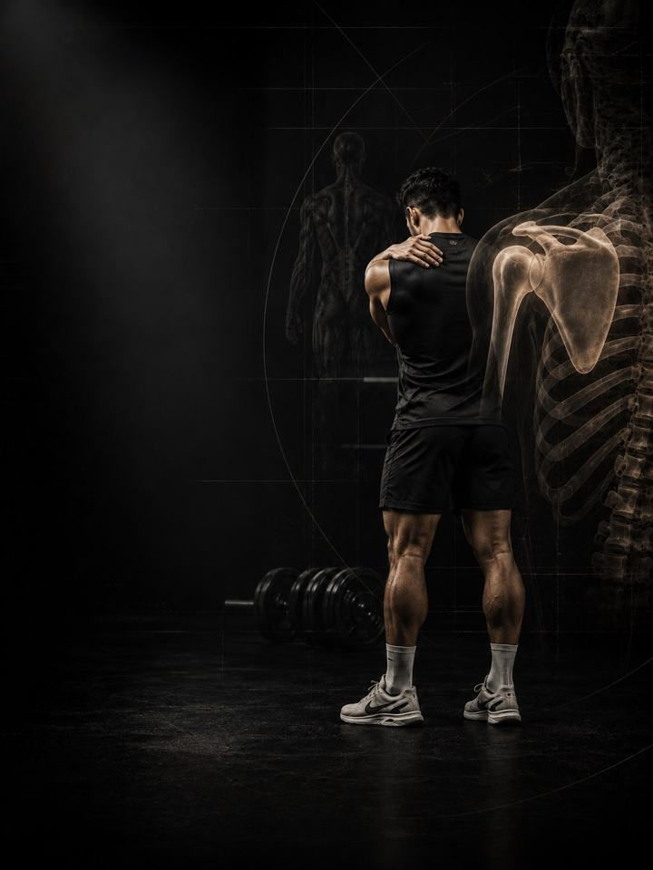

Shoulder & Scapular
Anchor the shoulder blade to the rib cage, then teach it to move under load.
- Built forshoulders that wing, shrug or pinch when the arm goes overhead
- Schedulea 10–15 minute daily routine, plus 3 strength days a week
- Equipmentdaily routine needs a mat and a band. Strength days need a full gym.
- Formatmobile PDF, every exercise linked to a demo video
The store opens soon. For now, Buy opens an Instagram message and you receive the PDF there.
Why shoulder pain keeps coming back
The shoulder blade is not bolted to anything. It floats on the back of the rib cage, held and steered entirely by muscle, and every overhead reach depends on it rotating up and staying flat at the right moment. When the muscles that do that job go quiet, above all the serratus anterior and the lower trapezius, the blade wings, tips or shrugs. The shoulder that sits on top of it pays for it.
The blade has one job in every reach: rotate up, stay flat, arrive on time. This program trains it in the order it learns: control it on the floor, load it on your knees, then use it standing.
Your week
A short daily routine, plus three strength days at the gym. Any three days work, as long as they are not back to back. One example:
| Sun | Mon | Tue | Wed | Thu | Fri | Sat |
|---|---|---|---|---|---|---|
| Day 1 + daily routine | Daily routine | Day 2 + daily routine | Daily routine | Day 3 + daily routine | Daily routine | Daily routine |
How it runs:
- Test first. Four tests before week 1, repeated after weeks 3 and 6. Winging is visual, so film it rather than guess.
- Daily routine, 10–15 min. Seven movements, every day. On strength days it doubles as the warm-up.
- Strength days. Days 1, 2 and 3, done in order.
The five patterns behind most shoulder pain
Five patterns break the blade's job, and they are close relatives: the same weak serratus and lower trap, the same short pec minor and stiff mid-back, showing up in different combinations. Most people recognise themselves in two or three. The program trains all five at once, so you don't need a perfect diagnosis to start.
-
Winging shoulder blade (weak serratus). The inner edge of the shoulder blade lifts away from the rib cage instead of gliding across it. The serratus anterior, the muscle that holds the blade flat and rotates it up when you reach, is not firing hard enough or soon enough. The blade loses its base exactly when the arm needs one. In the program: Push-Up Plus, Serratus Wall Slides, Bear Crawl, Serratus Punch
-
Rounded shoulders. The blades sit wide and forward, pulled there by a short pec minor and lats while the mid traps and rhomboids under-work. Reaching overhead now starts from a poor position, and the front of the shoulder takes the friction. It is the classic desk-and-phone posture. In the program: Chest Stretch, Band Pull-Aparts, Face Pulls, Rows
-
Blade tipping down (weak lower trap). The blade tips and points down instead of rotating up. Without the lower trap doing its share, the shoulder runs out of space near the top of every overhead lift. This is the pattern most often mislabelled as impingement. In the program: Prone Y Raise, Cable Y-Raise, Serratus Wall Slides
-
Shrugging first, head forward. Every time the arm goes up, the shoulder shrugs first. The upper traps take over from the deeper stabilisers, the head drifts forward, and the neck ends up doing the shoulder's work. That is why tight traps and headaches come with this one. In the program: Resisted Chin Tucks, Landmine Press, Carries
-
Stiff mid-back. The blade has no joint with the spine. It floats on the rib cage. If the mid-back is locked in a rounded position, there is no surface for the blade to glide on, and no amount of shoulder-blade drills will fix that. Restore the rib cage first and the blade often follows. In the program: T-Spine Opener, Thread the Needle, Wall Thoracic Rotation
Your pattern adds. The PDF lists extra exercises for each pattern. Add the ones for the patterns that sound most like you at the end of each strength day, at 3 sets each.
How the 6 weeks progress
The daily routine stays the same for all six weeks. The strength days move up a position every two weeks.
| Weeks 1–2 | Weeks 3–4 | Weeks 5–6 | |
|---|---|---|---|
| Phase | Control | Build | Integrate |
| Focus | Floor and wall: wake up the serratus | Kneeling, with first load | Standing and overhead: back to real life |
| Working sets per week | 54 | 54 | 54 |
Average effort is about 6 out of 10 in weeks 3–4 and 6.8 in weeks 5–6. That scale is RPE, a 1–10 rating of how hard a set feels: 6 leaves about 4 reps in the tank, and 6.8 leaves about 3.
The rules that make it work
- Position is the progression. The exercises move up every two weeks: floor, then kneeling with load, then standing and overhead. Inside a phase you don't need new exercises. You need the next position.
- Week two of each phase is always harder than week one. It adds one set to the first two exercises and 5 seconds to every hold. This is set in the program, so you never have to guess.
- Move on only when you're ready. Go to the next phase when every set of the current one is clean, with no shrug and no next-day shoulder ache. If you're not there yet, repeat the week.
- Keep training. The PDF has swaps for the lifts that punish an unstable blade.
- Decisions follow numbers. You retest after weeks 3 and 6.
How you'll measure progress
Four tests before week 1, then again after weeks 3 and 6, recorded on the score sheet in the PDF. They track the things that matter here, such as a prone Y hold, a wall angel and a push-up test for winging.
What good progress looks like
- Weeks 1–2: the shrug quietens, and the daily work stops feeling like effort.
- Weeks 3–4: the prone Y hold gets longer, and the wall angel travels further.
- Weeks 5–6: the wing shrinks or disappears in the push-up test, and overhead work stops pinching.
If nothing has moved by the week 3 retest, get a professional assessment instead of pushing harder.
Finishing standard at week 6: 2/10 pain or less overhead with no pinch at the top of a reach, a prone Y hold past 30 seconds a side with a side-to-side gap under 25%, and twenty slow wall push-ups with no blade lift-off.
Break the position
The blade does not lose position in the gym. It loses it in the eight hours before you get there. Do one reset every hour you spend at a desk or on a phone: stand, roll the shoulders back and take three 90-90 breaths. Thirty seconds. Protect the two free painkillers as well: 7–9 hours of sleep and managed stress. If you sleep on your side, keep a pillow under the top arm so the shoulder is not pulled forward all night.
The science
Every program in the library is built on published research, and how strong that research is gets stated, not implied. Where the evidence is limited, the page says so.
| Finding | Source | What it does not show |
|---|---|---|
| Strength training cuts sports injuries to under a third of the control rate. Stretching does not reduce them. | Lauersen, Bertelsen & Andersen, British Journal of Sports Medicine 2014. Meta-analysis of 25 randomised trials, 26,610 participants. PMID 24100287 | Risk ratio 0.32 for strength training and 0.96 for stretching. The trials varied a lot, and dose was not standardised. |
| Every sensible prescription beats not training. Heavier loads rank highest for strength. | Currier, McLeod, Banfield et al., British Journal of Sports Medicine 2023. Network meta-analysis, 178 strength and 119 hypertrophy studies. PMID 37414459 | The differences between prescriptions were small, and all of them worked. |
| Strength keeps improving as weekly sets rise, with diminishing returns. Training more often reliably helps strength. | Pelland, Remmert, Robinson, Hinson & Zourdos, Sports Medicine 2025. Meta-regressions, 67 studies, 2,058 participants (79% male). PMID 41343037 | How sets were counted (direct or indirect) changes the numbers considerably. |
What's next
After 6 weeks:
- Build strength and muscle: Foundation Strength
- Return to your sport: the Performance series
- Another area needs work: the Corrective series
Before you buy: get cleared first if
- You have chest pain, unusual breathlessness, palpitations or dizziness with exertion.
- You have uncontrolled high blood pressure, a known heart condition, or recent surgery.
- You are pregnant or recently post-partum. Get clearance and a tailored program first.
- Your pain started with a specific injury (a pop, the joint giving way, or swelling within hours), or you have numbness, weakness, fever or pain that wakes you at night.
This program is general fitness guidance. It does not replace a medical assessment.
The store opens soon. For now, Buy opens an Instagram message and you receive the PDF there.